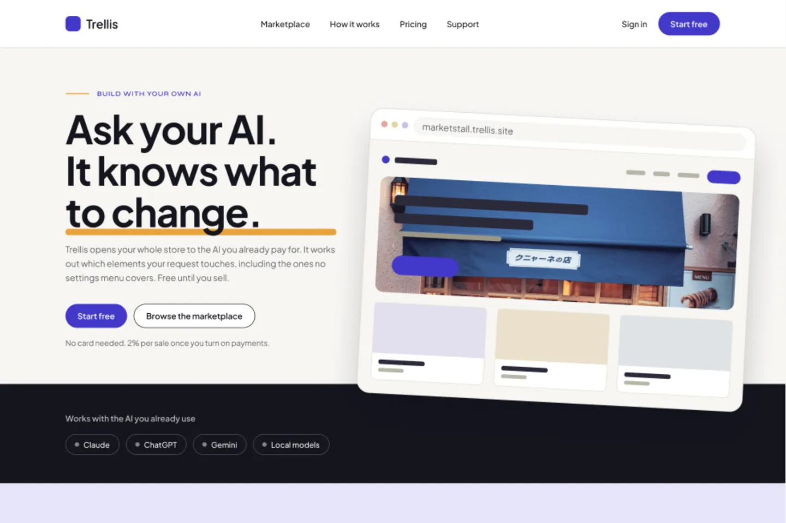
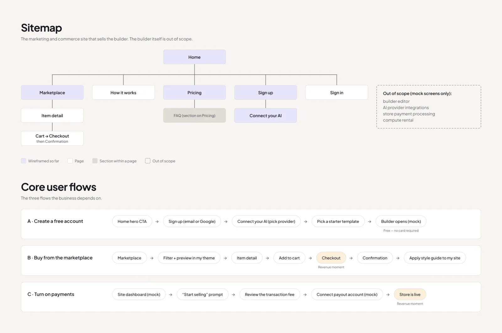
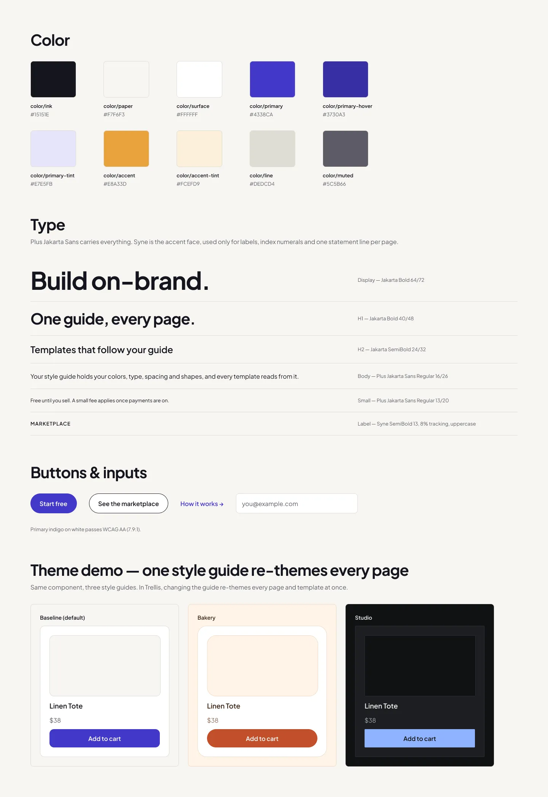
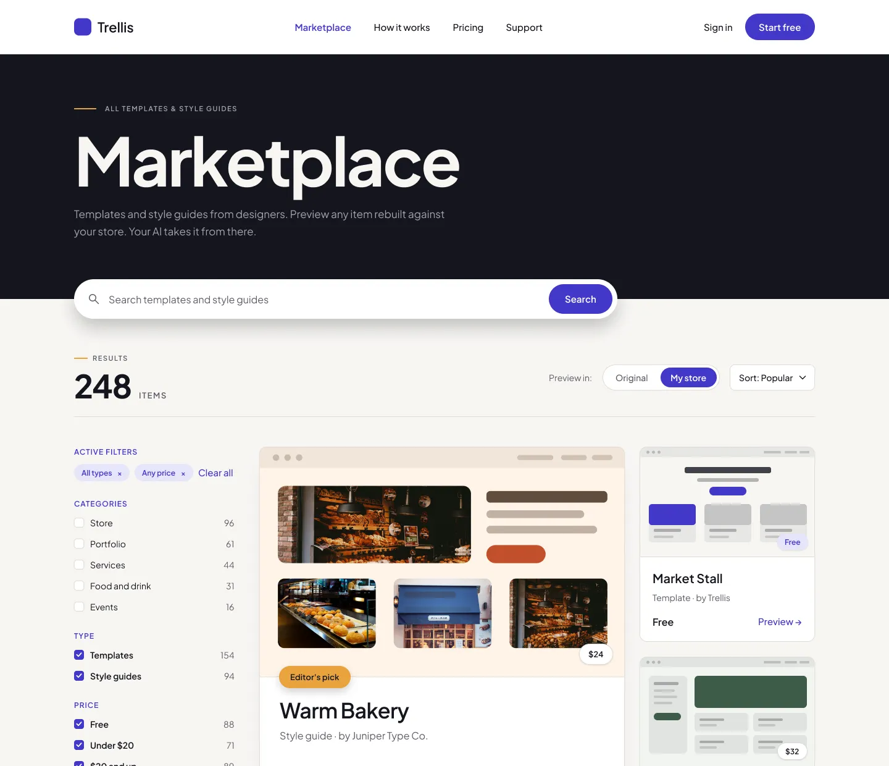
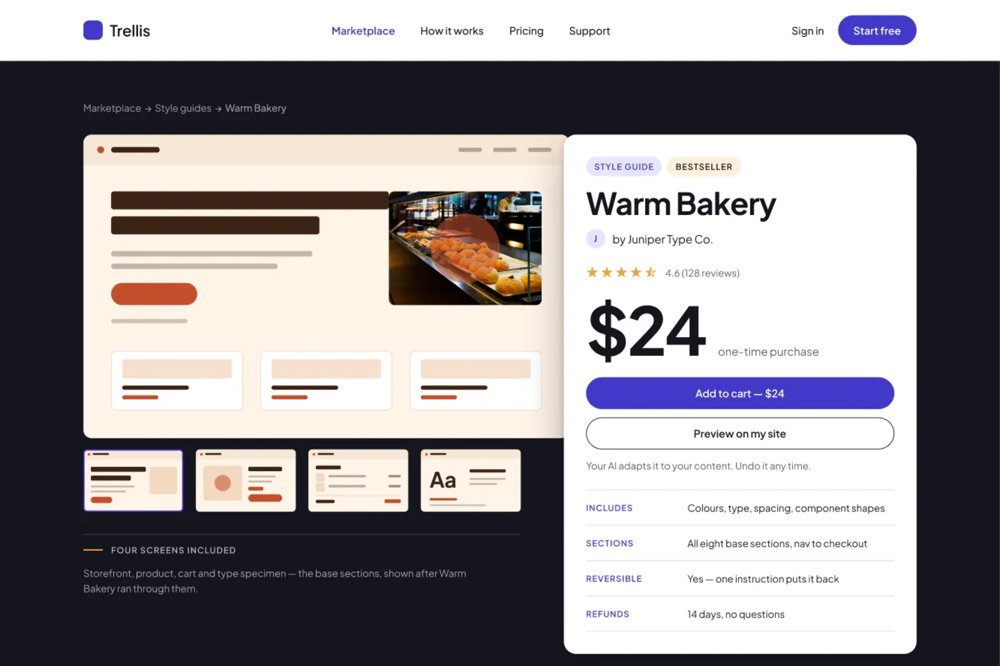

Trellis
Trellis is a concept for a store builder that uses the AI you already pay for. You buy a template or a style guide in the marketplace, and your own assistant applies it to your store, so the thing you are paying a subscription for does the work instead of another builder's settings menus. I designed it in weekly sprints, starting with structure and ending with the high-fidelity pages.
The home page leads with that promise and names the assistants it works with, because the whole idea depends on already having one.

Structure before screens
The first sprint was a sitemap and the flows, with the scope marked on the drawing itself: what was wireframed so far, what is a page, what is only a section inside a page, and what is out of scope. Three flows carry the product — creating a free account, buying from the marketplace, and turning on payments — and the two moments where money changes hands are labelled, so it is clear what the rest of the design is in service of.

A style guide before pages
The second sprint was a style guide: color tokens with their hex values, a type ramp with the sizes and line heights written next to each step, and the buttons and inputs. The last band demonstrates the point of the product. The same store card is shown in three themes, so a buyer can see what applying a style guide actually changes.

The pages
The marketplace is the center of the product, so it got the most attention: filters that survive a long list, a result count, and a toggle that previews every item in your own theme instead of the designer's.

A template page has to answer one question: what exactly am I buying? It lists the screens included, what the style guide covers, that one instruction puts it back, and the refund window, next to a price and a preview button.

Where it stands
The desktop pages are done through checkout and support. Mobile layouts and a clickable prototype were never part of the sprints, so this is a design, not something you can click through.